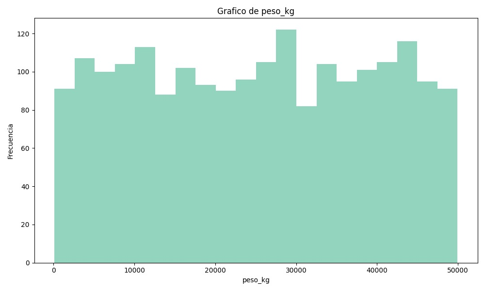
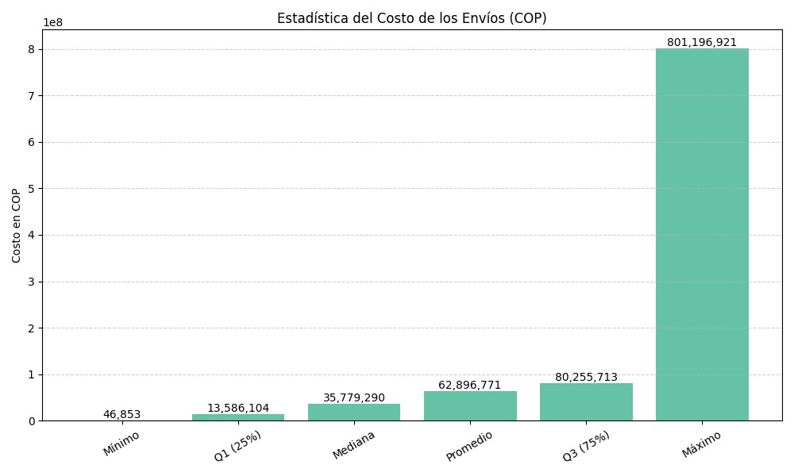
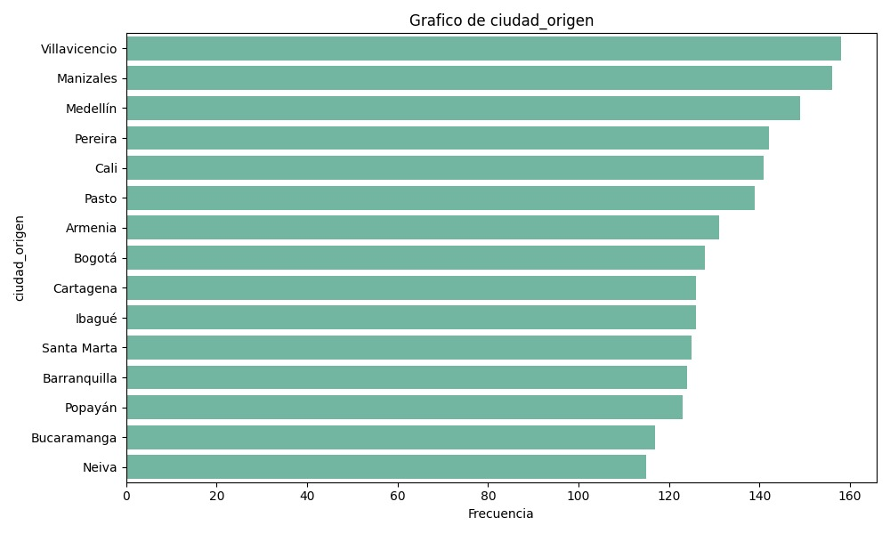
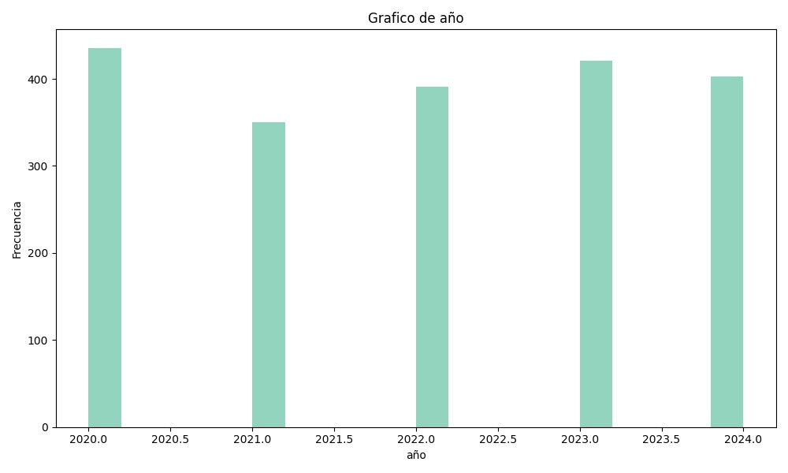

Analisis de Datos
Este proyecto presenta un análisis visual del comportamiento del transporte terrestre en Colombia a lo largo del tiempo, utilizando datos históricos para identificar tendencias, patrones y posibles áreas de mejora. A través de gráficas interactivas, se exploran variables como el volumen de pasajeros, el flujo vehicular, la evolución de rutas y el impacto de políticas públicas en la movilidad. El objetivo es ofrecer una herramienta informativa y accesible que apoye la toma de decisiones y fomente una comprensión más profunda del sistema de transporte colombiano.
Impacto Ambiental
El 69 % de los trayectos de carga en Colombia son vacíos, una ineficiencia que multiplica la contaminación del sector transporte.

El transporte de carga y su huella en el ambiente
- En el caso de las tractomulas, el 66,37 % de los trayectos son vacíos.
- Optimizar esos viajes podría reducir CO₂ en un 34,82 %.
- El transporte de carga contribuye con el 4,61 % de las emisiones de CO₂ en Colombia.
- Dentro del sector transporte, el transporte terrestre representa el 42 % de las emisiones.
ANALISIS DE DATOS
El análisis de datos nos permite ir más allá de los números: entendemos cómo influyen el tiempo, los costos y las variables operativas para diseñar estrategias inteligentes que impulsen la competitividad en el sector transporte.

Gran heterogeneidad en los pesos transportados
Se evidencia la necesidad de estrategias que reduzcan los trayectos con baja ocupación. Esto es especialmente relevante en Colombia, donde el transporte terrestre concentra más del 73 % de la carga movilizada en el país y es uno de los principales responsables de las emisiones de CO₂.
- Concentración en tramos intermedios.
- Alta presencia de cargas ligeras y medianas
- Carga máxima (≈ 50.000 kg)

Desigualdad en los costos de transporte
Se muestra una gran desigualdad en los costos de transporte, donde unos pocos envíos extremadamente altos inflan el promedio. Esto evidencia la necesidad de optimizar la logística y reducir viajes ineficientes, clave para mejorar la competitividad y mitigar el impacto ambiental del transporte terrestre en Colombia.

Análisis de las ciudades de origen
El transporte terrestre en Colombia se concentra en unas pocas ciudades estratégicas, lo que refleja centralización logística y desigualdad territorial. Esto plantea tanto un reto de congestión como una oportunidad para optimizar y diversificar las rutas de carga.
- La concentración en pocos puntos genera congestión en vías principales y mayores tiempos de desplazamiento.
- La economía colombiana depende de corredores logísticos específicos

Desde 2020 hasta 2024
- 2020: Mayor número de registros, alta actividad en transporte terrestre
- 2021: Caída significativa, impacto de la pandemia y restricciones.
- 2022: Recuperación progresiva de la actividad.
- 2024: Ligera baja, pero estabilidad general del sector.